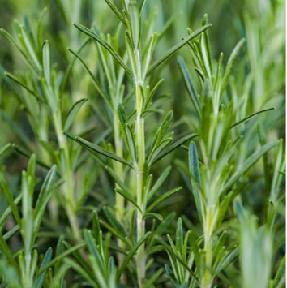
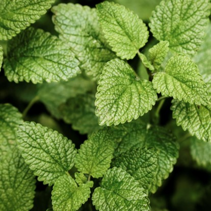
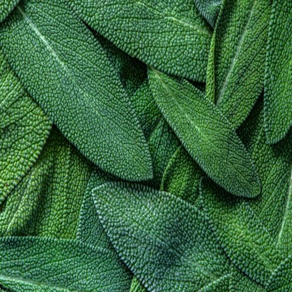
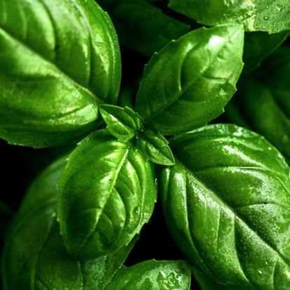
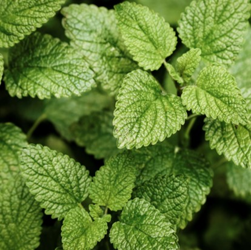
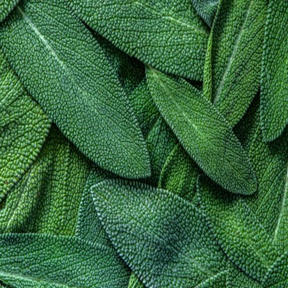
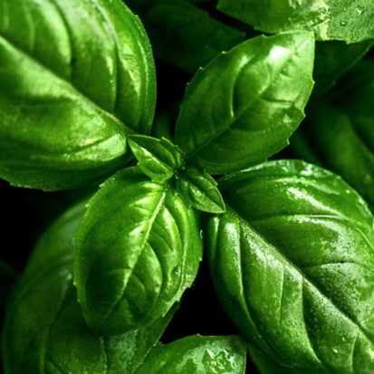
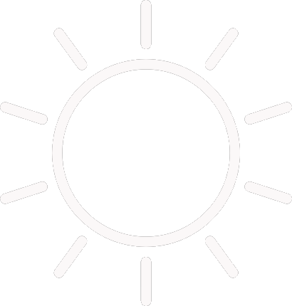

 





רוזמרין
מרחיק נמלים ויש שטוענים שאפילו מגרש חלומות רעים
תנאי גידול:
השקייה: מועטה

תאורה: שמש מלאה
נענע
לתחושת רעננות בפה
תנאי גידול:
השקייה:מרובה
תאורה: שמש מלאה
מרווה
אחד מצמחי התבלין העתיקים והנפוצים ביותר בארץ
תנאי גידול:
השקייה: בינונית
תאורה: חצי צל
בזיליקום
באיטליה נחשב לסמל האהבה
תנאי גידול:
השקייה: מרובה
תאורה: שמש מלאה